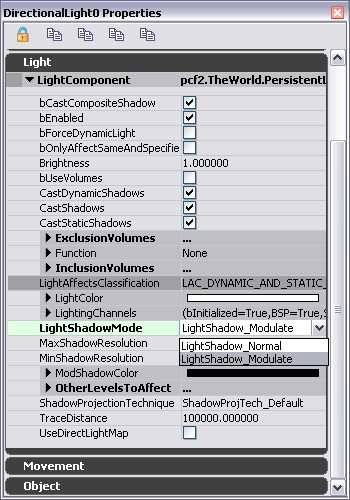
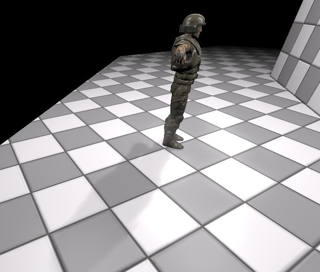

UDN
Search public documentation:
ModulatedShadowsJP
English Translation
中国翻译
한국어
Interested in the Unreal Engine?
Visit the Unreal Technology site.
Looking for jobs and company info?
Check out the Epic games site.
Questions about support via UDN?
Contact the UDN Staff
中国翻译
한국어
Interested in the Unreal Engine?
Visit the Unreal Technology site.
Looking for jobs and company info?
Check out the Epic games site.
Questions about support via UDN?
Contact the UDN Staff
Modulated(モジュレート)シャドウ
ドキュメントの概要: モジュレートシャドウとは、シャドウバッファおよびシャドウボリュームの両手法によるダイナミックシャドウを用いた、ノーマルシャドウに代わるシャドウ表現。ここではその用法とユーザー設定について説明。ノーマルシャドウに関する情報については「シャドウイングのリファレンス」を参照。 ドキュメントの変更ログ: Daniel Wright により作成。概要
モジュレートシャドウは、ノーマルシャドウでのパフォーマンス低下問題を解決すると同時に、より豊かなシャドウの表現力をアーティストに提供するために開発されました。本文における「ノーマルシャドウ」とは、単にモジュレートシャドウでないものを指し、シャドウ技術の一種を表すものではありません。 モジュレートシャドウは、投影されたシャドウとシャドウボリュームと共に機能するものです。バージョン
ModShadowFadeoutTime 機能は QA_APPROVED_BUILD_JUNE_2007(2007年６月認証ビルド)にて導入されましたが、シャドウは QA_APPROVED_BUILD_AUGUST_2007 (2007年8月認証ビルド) の時点までフェードすることがありませんでした。Modulate-Better shadow モードが2008年１月QA 認証ビルドに追加されました。関連した設定

LightShadowMode
この光源について採用されているシャドウイングのタイプを制御します。- LightShadow_Normal - デフォルト状態であり、ダイナミック リットによるシャドウにはメッシュが必要です。 This is a very これは非常に重要な意味合いです。なぜかというと、lightmap が影投影をしているライトから寄与を含む場合、ライトマップされたジオメトリがノーマルシャドウを受け取れないからです。ノーマルシャドウは余分なレンダーターゲットスペースを必要とするため、Xbox 360でコスト的に非常に高いです。これは、他のレンダーターゲットが保存され、後にリストアされる必要があるからです。
- LightShadow_Modulate - この光源からのモジュレートシャドウを有効にします。 wこれが一番コストの安いモードです。モジュレートシャドウは特定のライトをマスキングするのではなく、シーンカラーを倍にすることで機能します。
- LightShadow_ModulateBetter - Modulate と同じ機能をしますが、モジュレートシャドウは背面やコンポーネントのエミッシブが１以上になっているピクセルでマスクされます。ModulateBetter は、キャスターやマスクを演算するためのすべてのレシーバーの余分なレンダリングパスを追加します。
ModShadowColor
モジュレートシャドウの色を調整します。ShadowFalloffExponent
スポットライトやポイントライトの距離を基にしてフォールオフするシャドウのレートです。 値が高ければそれだけフォールオフの発生がより早く起こります。値1.0は直線のフォールオフに相当します。ModShadowFadeoutExponent
これは ModShadowFadeoutTime がゼロ以上の時、フェードアウトとフェードインカーブを制御します。ModShadowFadeoutTime
これがゼロ以上の場合、モジュレートシャドウはキャスターが最後に可視になった時間を基にフェードアウトします。 またキャスターが最初に可視になった時間を基にフェードインします。これは他のルームでキャラクターのシャドウをフェードアウトするのに使われ、そうでない限り、シャドウが壁をとおってしまいます。エディタでリアルタイムが必ずアップデートされているようにしてください、そうでないと正確に作動しません。フェードはフレームレート依存のため、ヒッチが好ましくないアーチファクトを引き起こします。モジュレートシャドウを使う理由
オブジェクトの動的シャドウは、ノーマルシャドウを使う各ライト用に描画されます。厳密にはこのシャドウは現在の光源から来ているライトの不足部分です。これはさらに物理的に正しいモデルですが、深刻な意味合いが含まれています。典型的なシーンは複数のライトを同じエリアに持ちますが、パフォーマンス的な理由のためそのライトの一つだけが動的シャドウを投影します。 この場合、シャドウカラーが影の付いたサーフェスに影響しているライトに完全に依存しています。シャドウは非常に不鮮明です。なぜなら、影投影光源がサーフェスでライト全体の一部しか寄与しないためです。シャドウはライトの欠乏部分です。 この場合でシャドウカラーを微調整し、さらに暗くするのはアーティストにとって非常に難しいでしょう。理由としては、影投影ライトをさらに明るくするよう(または、より近く、より少ない減衰など)に要求し、シーンのライティングをだめにしてしまうからです。ノーマルシャドウは一度 lightmap がビルドされると静的ジオメトリ上に投影しません。モジュレートシャドウはシーン全体に投影しこの問題を解決します。
キャラクターに影響をしている３つのライトのあるシーン。１つのみがノーマルシャドウを投影しています。シャドウは非常に薄いことに留意してください

モジュレートシャドウのはたらき
以上のような訳でモジュレートシャドウが画像に導入されます。つまり、アーティストはモジュレートシャドウを使うと、ダイナミック オブジェクトに持たせるシャドウを一つにまとめられるようになり、そのシャドウを投影するライトのプロパティ修正なしに、色の編集などを行えるようになるのです。モジュレートシャドウでは、物理的整合性がノーマルシャドウに比べ低くなりますが、パフォーマンスと操作性の利点を考えて一般にオフセットとなっています。シャドウで ModShadowColor （モジュレートシャドウ色） が適用されているライティングでは、各パス処理のたびに、現在のライトをマスクアウトするのではなく減衰バッファまでレンダリング処理します。その結果、サーフェスを照らすライトの数に関係なくシャドウはより濃くなります。これは、ある光源から発生するシャドウが、その光源だけではなく全ての光源からの光に影響するからです。
キャラクタを 3 つのライトが照らしている同じシーンで、ひとつのライトだけがモジュレートシャドウを投影している例です。シャドウがくっきりしている所にご注目下さい。<
 ポイントライト用のモジュレートシャドウには、ライトの半径により半径減衰が決まります。これはスポットライトでも同様ですが、相違点は減衰がコーンの内側か外側かに影響を受けることです。尚、指向性ライトに距離減衰はありません。
ポイントライト用のモジュレートシャドウには、ライトの半径により半径減衰が決まります。これはスポットライトでも同様ですが、相違点は減衰がコーンの内側か外側かに影響を受けることです。尚、指向性ライトに距離減衰はありません。
制限事項
ダブルシャドウイング
モジュレートシャドウがシーンカラーに対して調整することから、シャドウが重なるエリアは２重に影がつけられます。 これの回避策はプリミティブの近くでシャドウペアレントをすることです。例えば、Gears of war １ではすべての武器は２重シャドウイングを防ぐため、ポーンにシャドウペアレント化されています。コンテンツのシャドウペアレントの方法については AttachingActors#b_ShadowParented をご覧ください。こーでシャドウペアレントをするには、 PrimitiveComponent's SetShadowParent メソッドを使ってください。エミッシブのアーチファクト
モジュレートシャドウは、エミッシブライトをはじめとした、本来陰影処理すべきでないシーンの色にも波及してしまいます。 Tこの回避策は Modulate-Better シャドウモードを使用することです。これはモジュレートシャドウが、任意のチャンネルのエミッシブが1以上のピクセルにより影響を受けるのを防ぎます。ジオメトリを透過した陰影処理
現在の仕様では、編集シャドウがジオメトリを透過して投影してしまいます。明らかに違和感が出てしまう場合は、ライトの配置を工夫して下さい。手動ライトの調整では、こうした状況を回避しづらいのですが、 ライト環境 を用いると格段に作業しやすくなります。時折、これは ModShadowFadeoutTimeを使うことにより緩和されます。バックフェースのシャドウは Modulate-Better シャドウモードで回避されます。 .これらの投影によるアーチファクトを実際に回避する唯一の方法は、ノーマルシャドウの使用ですが、通常ノーマルシャドウはモジュレートシャドウよりもかなりのコスト高になります。 ドミナントライト はこの例外の 1 つで、1 つのライトからノーマルシャドウを投影させて、コストを下げることができます。